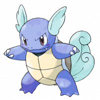
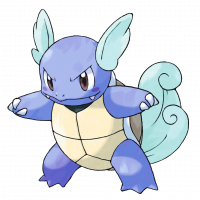

| HOME PAGE | POKEDEX |
Wartortle
|  | Wartortle è un Pokémon di tipo Acqua appartenente alla Prima generazione. Si evolve da Squirtle al livello 16, si evolve a sua volta in Blastoise al livello 36. |
| HOME PAGE | POKEDEX |
|  | Wartortle è un Pokémon di tipo Acqua appartenente alla Prima generazione. Si evolve da Squirtle al livello 16, si evolve a sua volta in Blastoise al livello 36. |